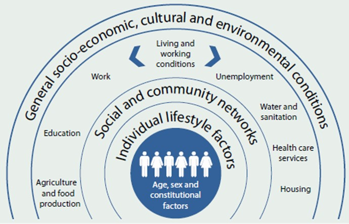

Resources:
Understanding Homelessness
Homelessness can happen to anyone and is much more than just not having a roof over your head. It’s defined as living in inadequate housing, such as sleeping rough, staying in temporary or overcrowded shelters, or couch surfing (Australian Bureau of Statistics [ABS], 2021). Many factors can lead to homelessness, such as domestic abuse, financial instability, and mental health issues (Phipps et al., 2019). It also stems from broader societal issues like the lack of affordable housing and low welfare support (Brown & Mueller, 2014; Perez, 2014).
How Does Homelessness Impact Health?
People who are homeless face serious health challenges. They suffer from higher rates of infectious diseases, poor oral health, mental illness, and chronic conditions than the general population (Aldridge et al., 2018; Davies & Wood, 2018; Queen et al., 2017; Vallesi et al., 2021). Unfortunately, they also face significant barriers to accessing healthcare, including long waiting times, difficulty registering with general practitioners, and lack of transportation (Dorney‐Smith et al., 2021). As a result, many homeless individuals end up relying on emergency departments for healthcare, which only adds pressure to hospitals (Lewer et al., 2021).
Homelessness and the Sustainable Development Goals (SDGs)
Homelessness is directly connected to several Sustainable Development Goals (SDGs). SDG 1 (No Poverty) highlights how poverty drives homelessness, while SDG 3 (Good Health and Well-Being) recognises the poor health outcomes faced by homeless people due to inadequate access to healthcare (Aldridge et al., 2018). Additionally, SDG 10 (Reduced Inequalities) focuses on the social and economic exclusion that homeless people often experience, further emphasising the importance of addressing homelessness at a structural level (Brown & Mueller, 2014).

Source: United Nations (2015)
The Social Gradient of Health and Homelessness
Wilkinson and Marmot’s (2003) Social Gradient of Health theory explains that people with lower socioeconomic status experience worse health outcomes. This is particularly true for people experiencing homelessness, who often find themselves at the bottom of this health gradient. Homeless individuals have shorter life expectancies and higher mortality rates due to the significant barriers they face in accessing healthcare and social services (Baggett et al., 2013; Pearson et al., 2021).
How Social Determinants Affect Homelessness
Ecological Model of Social Determinants of Health
Source: Dahlgren & Whitehead (1991)
The Social Gradient of Health and Homelessness
Call to Action
Breaking the cycle of homelessness requires action on multiple levels. At a personal level, individuals need access to healthcare, support for mental health and addiction issues, and safe, affordable housing (Dorney‐Smith et al., 2021). At a societal level, there needs to be more affordable housing options, better welfare systems, and increased support for people exiting homelessness (Brown & Mueller, 2014). By learning about these issues, you can develop a deeper understanding and empathy for those affected by homelessness. You have the power to make a real difference! By taking small but meaningful actions, you can help change lives. Start by volunteering at local shelters, standing up for better housing options, and using your voice to spread the message that homelessness is a crisis we can’t ignore. Every step you take brings us closer to creating a world where everyone has a safe place to call home.

Volunteer Opportunities:
Participate actively in our mission! We offer a range of volunteer opportunities, from helping with community event planning to supporting our food delivery programs. Your support counts, regardless of how much time or energy you can offer. Come along with us as we work to improve the community and make connections with people who share your enthusiasm for helping others!
References
- Aldridge, R. W., et al. (2018). Morbidity and mortality in homeless individuals, prisoners, sex workers, and individuals with substance use disorders in high-income countries: a systematic review and meta-analysis. The Lancet, 391(10117), 241–250.
- Australian Bureau of Statistics (2021). Housing statistics for Aboriginal and Torres Strait Islander peoples.
- Baggett, T. P., et al. (2013). Mortality among homeless adults in Boston: shifts in causes of death over a 15-year period. JAMA Internal Medicine, 173(3), 189–195.
- Bower, M., Conroy, E., & Perz, J. (2018). Australian homeless persons’ experiences of social connectedness, isolation and loneliness. Health & Social Care in the Community, 26(2), e241–e248.
- Brown, C., & Mueller, C. T. (2014). Predictors of employment among sheltered homeless women. Community, Work & Family, 17(2), 200–218.
- Chamberlain, C., & Johnson, G. (2011). Pathways into adult homelessness. Journal of Sociology, 1–18.
- Dahlgren, G., & Whitehead, M. (1991). Policies and strategies to promote social. Stockholm, Sweden: Institute for Futures Studies.
- Davies, A., & Wood, L. J. (2018). Homeless health care: meeting the challenges of providing primary care. Medical Journal of Australia, 209(5), 230–234.
- Dorney-Smith, S., et al. (2020). Meeting the needs of homeless people attending the emergency department. Emergency Nurse, 28(4), 31–39.
- Hawkins, R. L., & Abrams, C. (2007). Disappearing acts: The social networks of formerly homeless individuals with co-occurring disorders. Social Science & Medicine, 65(10), 2031–2042.
- Lewer, D., et al. (2021). Hospital readmission among people experiencing homelessness in England. Journal of Epidemiology and Community Health, 75(7), 681–688.
- Pearson, D., Vallesi, S., & Wood, L. (2021). Dying homeless in Australia: We must measure it better. Parity, 34(7), 13–15.
- Perez, J. L. (2014). The Cost of Seeking Shelter: How Inaccessibility Leads to Women’s Underutilisation of Emergency Shelter. Journal of Poverty, 18(3), 254–274.
- Phipps, M., Dalton, L., Maxwell, H., & Cleary, M. (2019). Women and homelessness, a complex multidimensional issue. Journal of Social Distress & the Homeless, 28(1), 1–13.
- Queen, A.B., Lowrie, R., Richardson, J., & Williamson, A.E. (2017). Multimorbidity, disadvantage, and patient engagement within a specialist homeless health service in the UK. BJGP Open, 1(3).
- Shinn, M. (1991). Social Relationships and Vulnerability to Becoming Homeless among Poor Families. American Psychologist, 46(11), 1180–1187.
- Vallesi, S., Tuson, M., Davies, A., & Wood, L. (2021). Multimorbidity among People Experiencing Homelessness-Insights from Primary Care Data. International Journal of Environmental Research and Public Health, 18(12).
- Wilkinson, R., & Marmot, M. (2003). Social determinants of health: the solid facts, 2nd ed. World Health Organisation. Regional Office for Europe.
- United Nations. (2015). The 17 goals: Sustainable development knowledge platform.
- Cuthill, F., & Ebook Central Academic, c. (2019). Homelessness, Social Exclusion and Health : Global Perspectives, Local Solutions (1st ed.). Dunedin Academic Press.
- Jayawardana, S., & Mossialos, E. (2020). Lives cut short: socioeconomic inequities, homelessness, and cardiovascular disease. Eur Heart J, 41(41), 4021-4023.
- Susmita, P., Trisha, B., & Avijit, M. (2024). Home, Homeless, and Homelessness. In (pp. 3-18).
- Australian Institute of Health and Welfare. (2024). Homelessness and homelessness services. Australian Government.
- Council to Homeless Persons.(n.d.). Homelessness facts, stats, and insights.